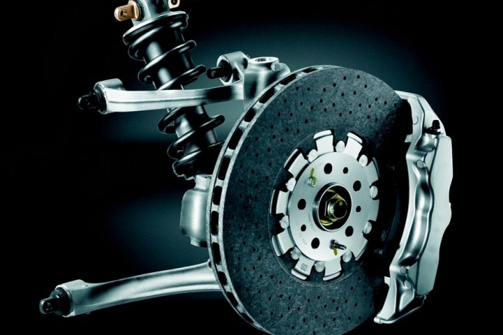

Sistema de Freios:
Segurança em
Primeiro Lugar
O sistema de freios é responsável por reduzir a velocidade e parar o veículo com segurança. Componentes como pastilhas, discos e fluido devem ser verificados regularmente.
Manutenção Preventiva – Troca a cada 10.000 km
